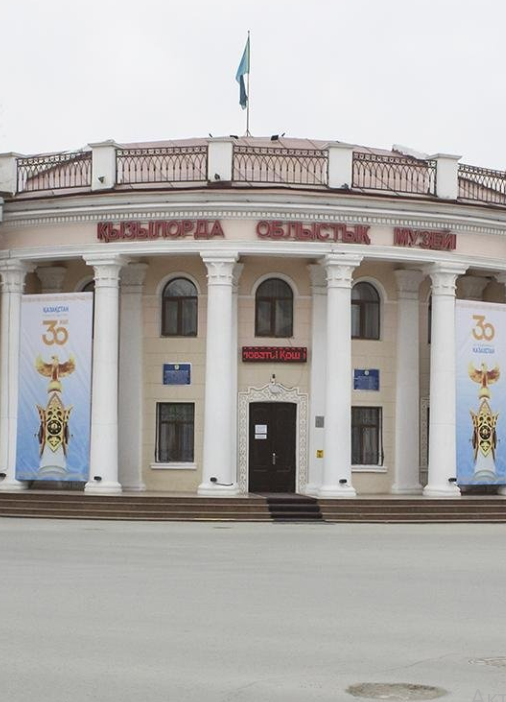
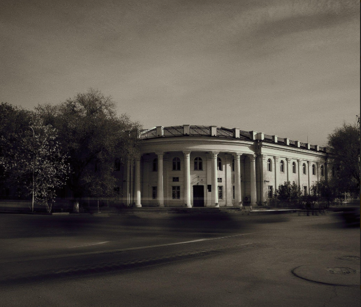

Regional History Museum – Center of Culture and Science of Kyzylorda
The museum was founded in 1939 and is one of the oldest cultural institutions in the region. Its collection includes more than 50,000 exhibits that reflect the rich history, ethnography, and nature of the Kyzylorda region.
- Main Sections: archaeology, ethnography, nature, regional history
- Number of Halls: 8 exhibition halls
- Collection: over 50,000 items
- Building: modern facility in the city center
What to See?
- 🺠Artifacts from the ancient Zhankent settlement
- 📜 Documents about the development of Baikonur and the region
- 🦴 Exhibits of flora and fauna of the Aral region
How to Get There?
📠Kyzylorda, Aiteke bi St. 7
🚶 Walking distance from the Central Square and shopping centers
Visitor Information
ⰠOpening hours: Tuesday–Sunday, 09:00–18:00
🎟️ Entry ticket: from 500 KZT
📞 Phone: +7 (7242) XX-XX-XX
The Regional Museum is a window into the rich historical heritage of the area. A perfect place for cultural enrichment!
PHOTOS

